MY ROLE
User Research | Information Architecture | Interaction Design | Prototype and Testing | UI/Visual Design
TOOLS
Sketch | Photoshop | Invision | Zeplin | Anima (Timeline)
Timeline: 80 hours over 4 weeks
CHALLENGE
How might we help users to access Zeit's trips across all devices?
(This was a creative personal project.)Zeit is a subsidiary of Richard Branson’s Virgin empire. After a long struggle with Elon Musk, Virgin has been able to make time travel tourism available to all. Investors from Zeit, a subsidiary of Virgin Group, sees the potential for growth and development in the time travel ecommerce market.
ASSUMPTIONS
1. There is a need for ecommerce time travel websites.
2. There is consumer interest in access to time travel.
3. Flows and patterns found on other ecommerce websites are needed for Zeit's site to help the user.
SOLUTION
Through the use of secondary and market research, customer interviews, IA, and usability testing, I created a responsive site redesign that allows users to learn more about Zeit's offered travel packages and travel desinations.

RESEARCH
How are travelers already planning their trips?
I conducted market research and a competitive analysis to learn more about strengths and weakness
of current travel websites. Currently, The market’s largest segment is mobile services.
Revenue is expected to show an annual growth rate of 7.8% by 2022 and 70% of people
look at up to twenty reviews in the planning phase.
competitive analysis
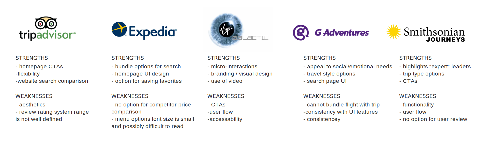
User Interviews
To better understand the travel experience from the user’s point of view, I interviewed ten frequent
travelers ages 29-75 years old. First, I listened and took notes about their past travel and online
booking experiences.
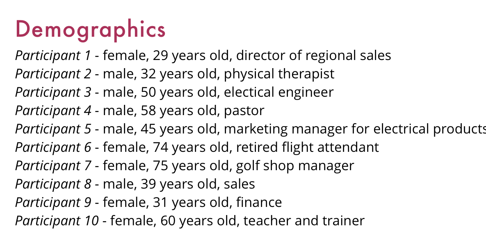
RESEARCH SYNTHESIS
What do travelers need?
After the user interviews were finished, I sorted my notes using an empathy map to clarify exactly what
users were saying, thinking, feeling, and doing when planning their travel adventures. I looked for patterns
and noticed that a few key ideas emerged from the majority of the traveler interviews:
Key Insights
- Participants need access to shared experiences with people.
- Participants need support when changing a travel plan.
- Participants need access to trip information at their fingertips.
- Participants need to know they will save money.
- Participants need access to new cutures when they travel.
Zeit User Persona
Using the insights and patterns collected from the empathy map, I created a user persona to understand
the major needs, goals, pain points, and motivations of the majority of users.
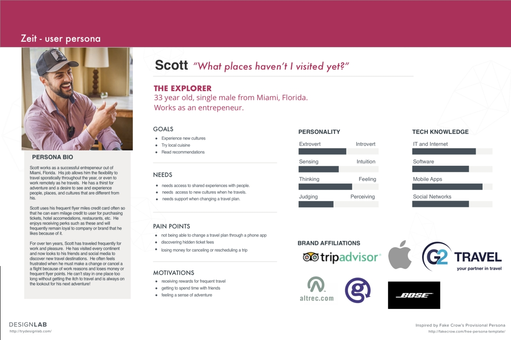
INFORMATION ARCHITECTURE
A key aspect of the design for Zeit was developing an intuitive user flow and site navigation structure that allows travelers to easily browse, search, and filter for specific information. An initial card sort activity with users and building a site map allowed me identify how the site navigation and categories could best be organized. Then, I created a site map using those categories to uderstand how the pages on the website interconnect and work together.
site map
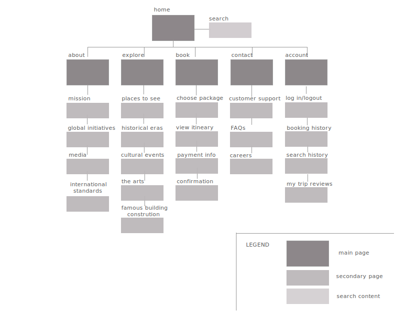
INTERACTION DESIGN
After creating the sitemap, I used a user flow and task flow to visualize the main steps and thought proccess of a user as they accomplish a task on Zeit's website from beginning to end.
user flow
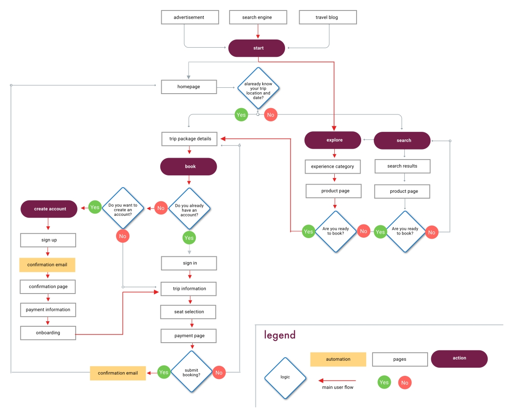
IDEATION
Now that the architecture had taken shape, I used sketching and wireframes to begin exploring how the interface would interact to create a visual focused experience for the users. In addition, I brainstormed different concepts for the logo that depicted a Zeit trip as a modern, adventurous, captivating experience.
low-fi homepage wireframes
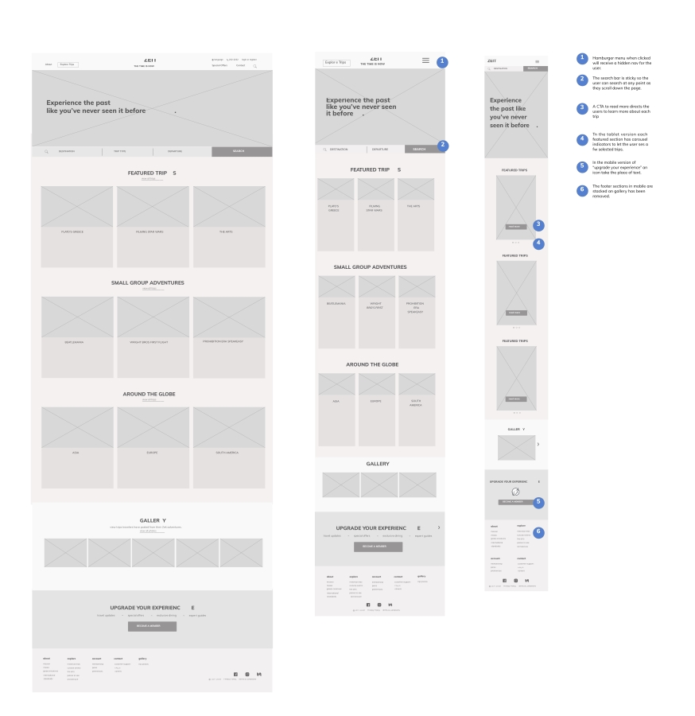
logo design
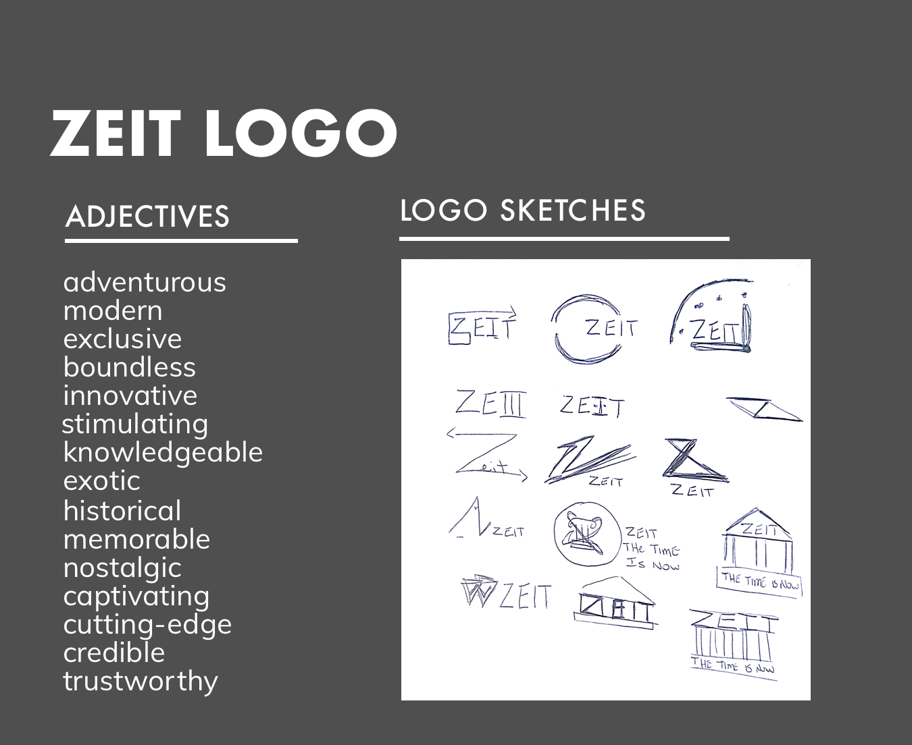

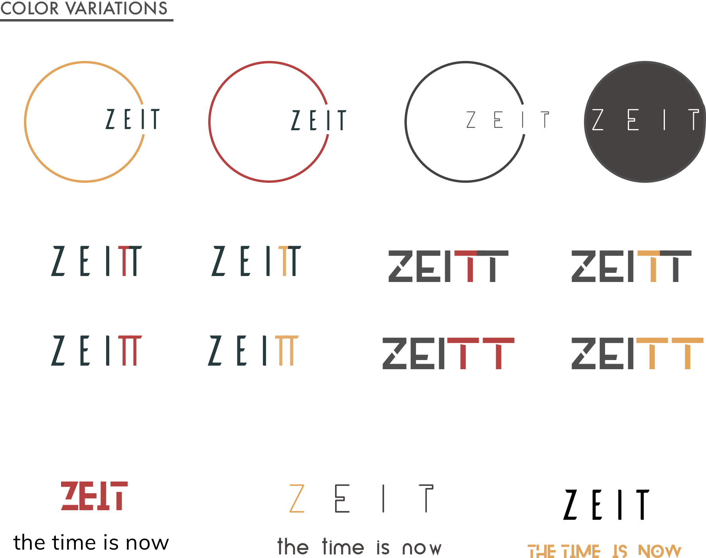
INTERFACE DESIGN
Once the interaction wireframes and initial logo idea was ready, it was time to add color, typography, and interface elements that conveyed Zeit’s brand visually. Orange was used as a highlight color to reflect the energy and adventerous nature of Zeit’s trips. The circular logo gives a feeling of movement that begins and ends with Zeit. I put together a UI Kit in order to maintain consistency with buttons, icons, headers, etc.
UI kit
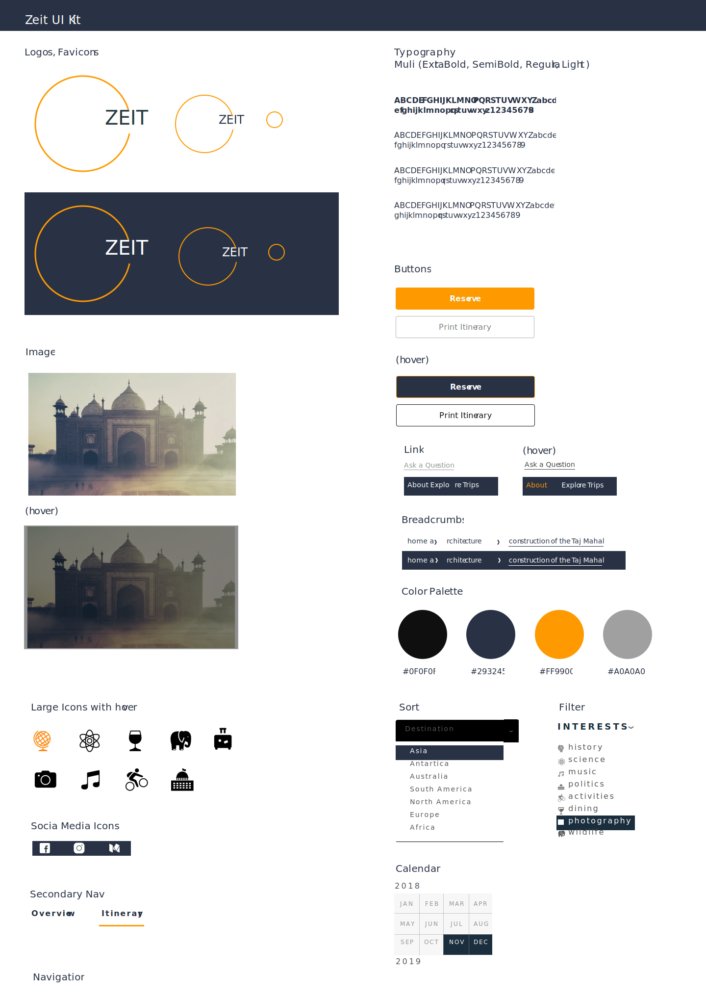
PROTOTYPE AND TESTING
The testing phase is the greatest opportunity to improve products by studying how people respond and interact with ideas. I created high-fidelity updates of the wireframe with the new UI design. The prototype in InVision had clickable buttons, simulated page transitions and animations that roughly matched my experiential concepts for usability testing.
hi-fi prototype
view in InVision
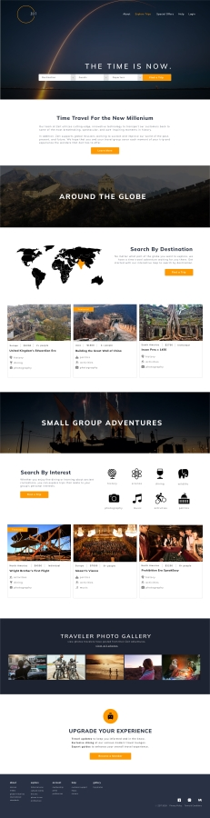 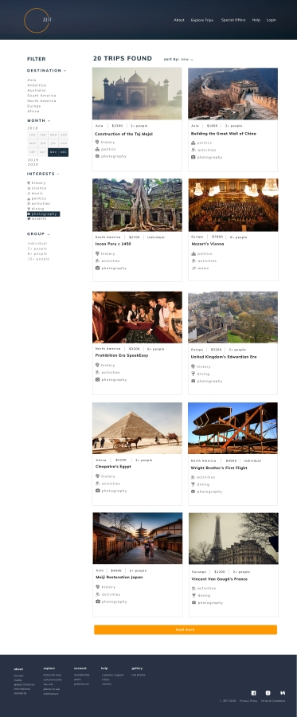 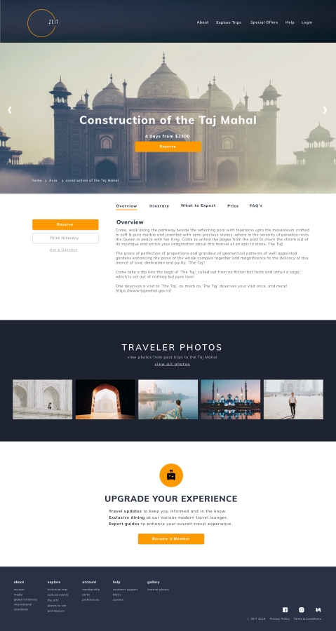
responsive hi-fi comps


User Testing
I conducted in-person testing with 3 participants who fit the demographics and profile of a potential Zeit
user. Each participants was given 2 scenarios to consider with a task to accomplish. Each participant session
was recorded and lasted approximately 10-15 minutes.
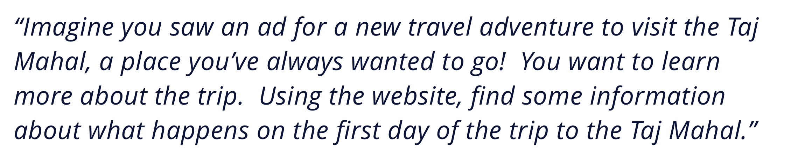
Testing and Insights
After testing the prototype with users, I created an affinity map to sort, prioritize, and rank the user
testing feedback. High priorities for the next iteration included adding the trip length and price on the
product page. In addition, I highlighted the drop down arrows on the homepage search component.
affinity map
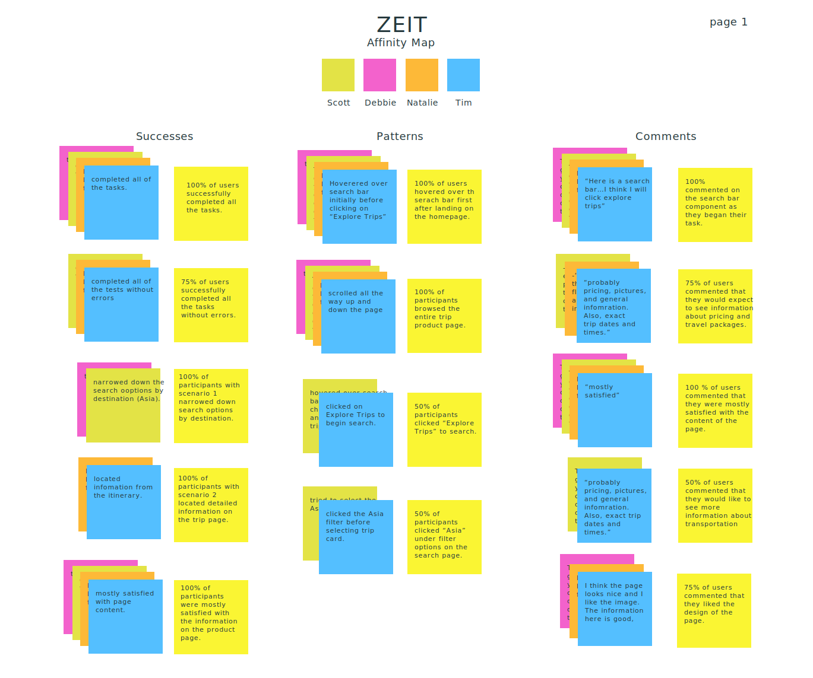
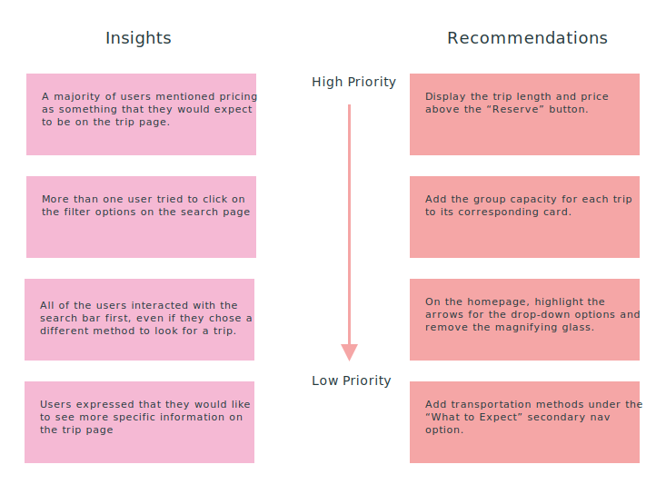
prototype iteration after testing feedback

WHAT I LEARNED
The Zeit e-commerce travel website was one of my first iterations through a design project from research
to prototype and user testing. I learned a lot about myself and the UX process throughout this project.
Here are a few of my takeaways after working on Zeit:
1. Take the time to think through research questions, goals, and planning at the beginning.
This saves time in the long run; how effective will your product and design be for users if you aren’t addressing the correct issues?
2. Well-crafted questions can get to the heart of what users feel and think during an online experience.
3. Time management is essential for staying within the scope of the project.
Success and Challenges
This was my first project designing a UI kit and I found it to be an effective way of remaining consistent
with elements and design styles throughout the design process. It also saved time and helped me keep the style
and feel of ZEIT’s brand in mind while working on the interface.
One of the most difficult but rewarding part of the project was completing a high-fidelity, functioning
protype to test with users. Aligning the visual personality and brand of Zeit with the functionality that
users needed was a challenge that pushed me as a designer. Focusing on my feedback and insights from user
research helped me make design decisions and kept me on track throughout the process.
Moving Forward
For another iteration, I would update the prototype based on feedback from more recent user testing.